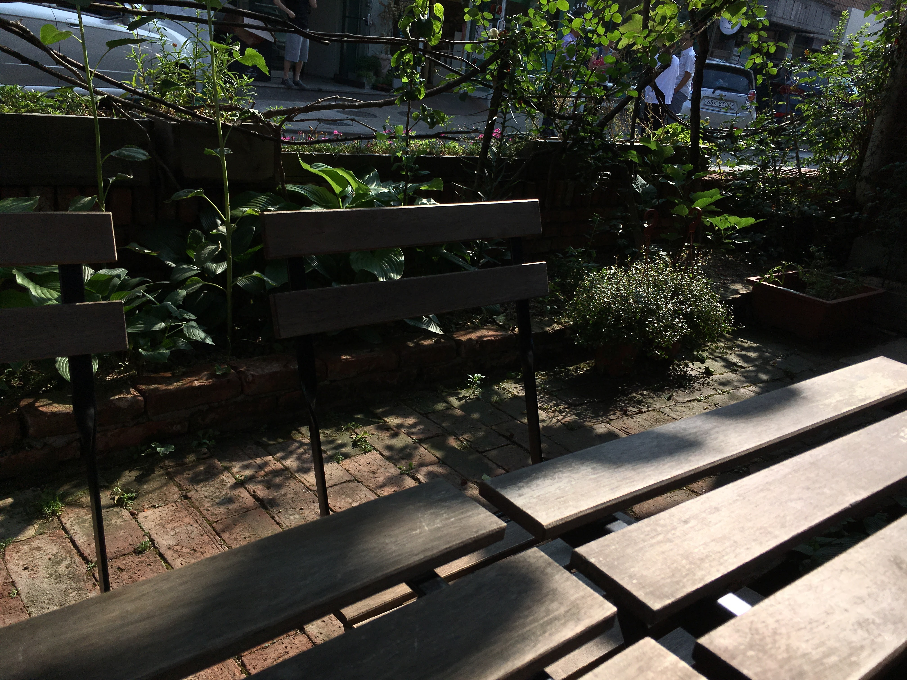

상추의 마지막 날

오늘도 나는 같은 자리에 같은 시간에 있다. 나는 한식집에서 주방보조로 일하고 있다. 반찬담는 일과 야채와 젓갈을 담당하고 있다. 매일 샐러드를 만들 야채를 자른다.
가지런히 상추를 여러장 겹쳐서 세로로 상추를 반으로 가른 뒤 같은 사이즈로 상추를 잘라낸다. 칼질을 한 번 하고 난 후 나는 내가 잔인하다고 생각했다. 아니 인간이 잔인하다는 생각이 들었다. 상추의 모습은 비를 세차게 맞은 뒤 햇빛을 즐기고 있었던 상추와 같이 굉장히 신선해보였다. 며칠 전 유전자에 관한 애니메이션을 보았다. 이 상추는 어디에서 왔을까? 인간의 창조물일까, 아니면 원래 있었을까.
목이버섯
어제 쉬고 오늘은 첫 출근입니다. 들어가자마자 비빔밥 재료를 썰었습니다. 표고버섯, 부추, 목이버섯을 손질 했습니다. 목이버섯의 이름이 귀와 닮았다고 해서 목이(木耳)라고 하네요? ㅎㅎ 재밌습니다.
정리정돈을 하자!
일하면서 저에게 습관이 생겼습니다. 원래 요리 할때 엄청 어질러놓고 일하는데, 여기서 일하다 보니 정리하는 습관이 생겼습니다. 항상 작업한 후 정리정돈과 설거지를 모두 끝낸후 다른 작업을 합니다. 그렇게 하면 다른 사람이 일하기도 편할 뿐더러 작업환경이 깨끗해져 이물질이 들어갈 일이 적습니다.내일은 좀 더 풍부한 이야기가 많았으면 하네요.